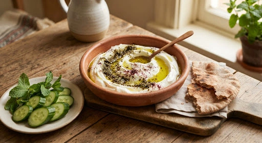
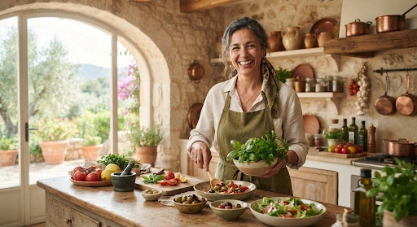
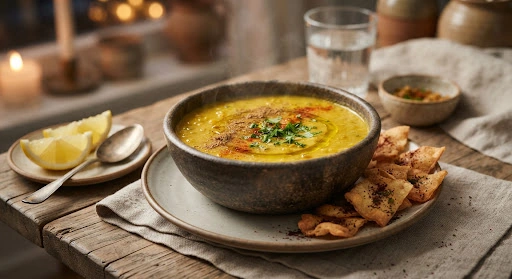
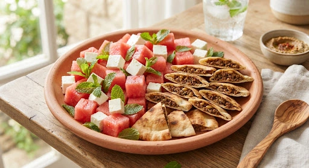

Breakfast • 8:00 AM
Labneh with Za'atar, Olive Oil & Cucumbers
group
2 servings
schedule
10 min

May 14 – May 20, 2024

Classic Levantine vegan green bean stew infused with caramelized onions and olive oil.


Weekly distribution: 4 Yakhnet Stews, 2 Mezze Nights, and 3 Plant-based Days.
Consolidate all missing ingredients for May 14–20.